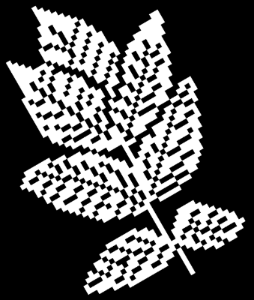

===
A one-man endeavor focused on DIY electronic and electroacoustic musical instruments and gear, creating simple, small tools with limited features, yet capable of building intimate worlds to explore. Sometimes things get weird, often intentionally lo-fi, but who cares.
===
Ash

A compact instrument: 13 knobs, eight buttons, and a leaf-shaped touch pad, with USB and TRS MIDI connectivity and stereo audio output.
-----
Ascetik. 2015 - 2026